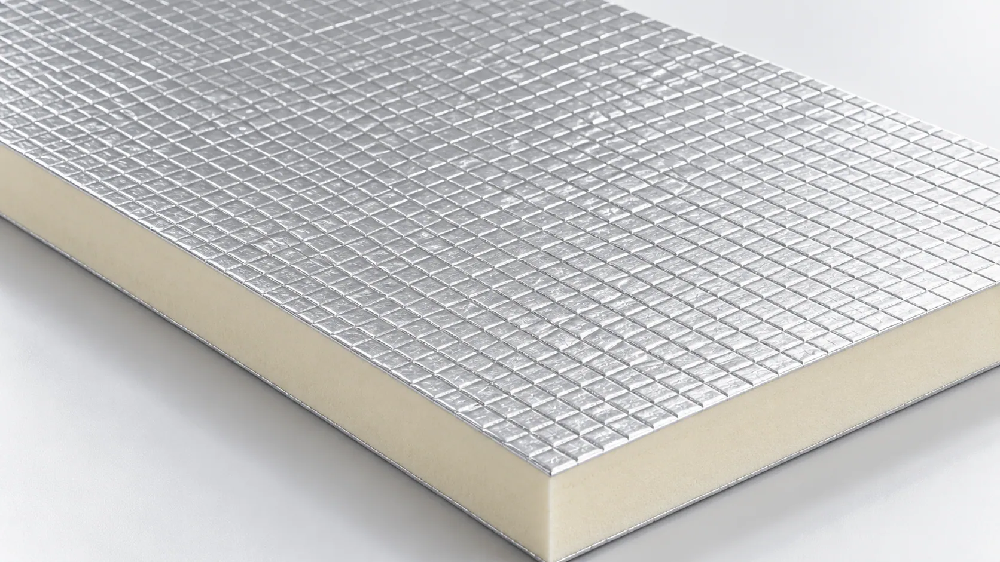

01 — Moisture entry
Pinholes, cracks and damaged joints may allow vapor into moisture-sensitive insulation.
01 — HERO
Aluminum foil facing options for suitable insulation boards, pipe insulation and industrial applications. Compare embossed and fiberglass-reinforced structures, then validate moisture control, handling and processing with your insulation core.
Key highlights:

02 — CHECK THE WEAK POINTS BEFORE PRODUCTION
Foil integrity and composite compatibility affect both manufacture and the installed insulation system.
Pinholes, cracks and damaged joints may allow vapor into moisture-sensitive insulation.
Unsuitable foil structure or processing can cause pinholes and microcracks during bending and handling.
Unsupported foil may tear, stretch or suffer localized damage during production and installation.
Check adhesive compatibility and bond uniformity to manage delamination and surface defects.

03 — MATCH FOIL AND REINFORCEMENT TO THE SYSTEM
A continuous foil layer offers low vapor permeability. Fiberglass mesh, coated veil and woven fabric provide different backing structures for handling and composite stability. Evaluate the selected structure with the actual foam formulation, adhesive or pipe-wrapping process.
A reflective aluminum surface can support thermal radiation management in an appropriately designed assembly.
Compare foil thickness, surface treatment and reinforcement for board production, pipe wrapping or industrial conversion.
04 — FACING STRUCTURES TO COMPARE
Compare samples by alloy, reinforcement and processing requirements. The source distinguishes five supply directions; embossed aluminum and embossed aluminum alloy foil are separate options.
A textured metallic surface for applications needing a lightweight, flexible reflective facing. Evaluate it for selected pipe coverings or general insulation facings.

An embossed metallic option using a selected alloy formulation. Mechanical characteristics depend on alloy grade, temper and thickness; confirm these for the intended use.
Grid reinforcement adds tensile support in two principal directions. Consider it for pipe insulation and composites requiring additional handling support.
A coated fiberglass backing provides a stable supporting surface. Evaluate foam bonding and lamination consistency for suitable PIR/PUR boards and laminated panels.
A woven backing offers reinforcement for pipe jackets, industrial coverings and removable insulation covers. Select fabric weight, weave and mechanical characteristics for the application.
06 — FACING AND INSULATION CORE
The facing may be embossed foil alone or a laminate with fiberglass reinforcement. The compatible core supplies the primary thermal insulation function.

A thin metallic layer provides a reflective surface and low vapor permeability; the selected option determines embossing and backing materials.
PIR/PUR foam, mineral wool, glass wool or other compatible insulation must be assessed with the facing for bonding, vapor resistance, mechanical stability and thermal requirements.
08 — TECHNICAL SPECIFICATIONS
Confirm the foil type, backing structure and roll requirements against the intended production process.
| Parameter | Specification |
|---|---|
| Product | Aluminum Foil Facers for Thermal Insulation |
| Surface Material | Aluminum Foil / Aluminum Alloy Foil |
| Surface Finish | Embossed / Smooth Metallic, Grade-Dependent |
| Reinforcement Options | Fiberglass Mesh / Coated Veil / Fiberglass Fabric |
| Composite Structure | Grade-Dependent |
| Aluminum Foil Thickness | Customizable |
| Basis Weight | Grade-Dependent |
| Roll Width | Customizable |
| Thermal Reflectivity | Grade & Surface-Dependent |
| Vapor Resistance | Grade & Assembly-Dependent |
| Tensile Strength | Reinforcement-Dependent |
| Adhesion Performance | Requires Application Validation |
| Compatible Insulation | PIR / PUR / Mineral Wool / Glass Wool, Subject to Grade |
| Supply Form | Rolls |
| Customization | Width, Foil Thickness, Embossing, Reinforcement & Lamination |
Technical specifications, foil alloy, composite structure, reinforcement properties, and test results vary by product grade. Contact GRECHO for detailed technical information and applicable test documentation.
09 — INSULATION APPLICATIONS
Select the facing grade for the core and assembly, with production and installation conditions included in the review.

Evaluate reinforced backing options for foam adhesion, vapor control and surface stability.

Mesh and woven fabric backing offer support for wrapping and installation where flexibility and vapor protection are required.

Compare composite structures with compatible mineral wool, glass wool or other insulation, checking vapor resistance and installation fit.

Evaluate mesh or fabric reinforcement for equipment, pipelines and specialized products exposed to handling and bending.
10 — VALIDATE THE SELECTED STRUCTURE
Trial the facing with the same insulation material and process planned for production.
Specify core, application, foil thickness, reinforcement, roll dimensions and performance targets.
Compare surface, flexibility, reinforcement and relevant mechanical properties.
Test foam production, adhesive lamination, wrapping or conversion as applicable.
Agree foil type, backing, dimensions, reinforcement and technical requirements.
11 — QUESTIONS BEFORE SPECIFYING
Aluminum foil provides a reflective surface that can reduce radiative heat transfer when used in a suitable assembly, typically with an adjacent air space. Overall insulation performance depends primarily on the insulation core and complete system construction.
A continuous aluminum foil layer provides high resistance to vapor transmission. However, the actual vapor barrier performance of the finished system also depends on foil integrity, seams, joints, adhesive layers, and installation quality.
Mesh has an open grid; fabric is a woven textile with a defined weave density. Reinforcement, flexibility, weight and handling differ, with actual support dependent on structure, bonding and specifications.
Foil thickness, embossing, roll width, reinforcement and composite structure may be available, subject to manufacturing feasibility.
12 — REVIEW A FACER FOR YOUR INSULATION
Share the insulation core, production process, reinforcement needs and technical requirements to discuss suitable facing samples.